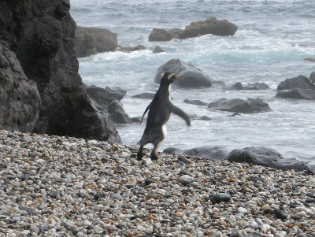
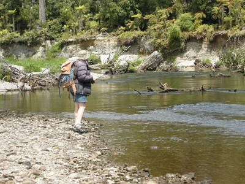
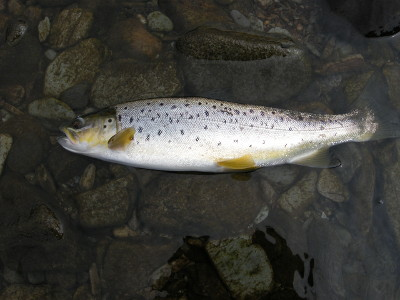
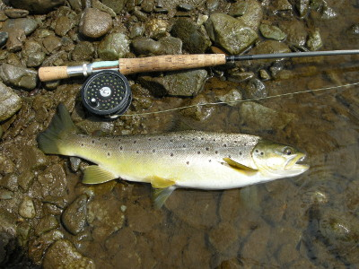

釣行日誌 ＮＺ編 「翡翠、黄金、そして銀塊」
ペンギン・ウォッチング
2010/11/29(MON)-1
11月29日の朝は、目覚まし時計で６時に起きた。朝食はグレースさんが用意してくれたパンとバナナと紅茶、そして炊きたての白米である。僕はまたタマゴかけ御飯にした。窓が大きく見晴らしの良いロッジのテーブルで、ブリントさんと四方山話をしながら腹ごしらえをした。
「今日は釣りの前に、珍しいペンギンを見に連れて行ってやろう」
釣り支度を整えると、ブリントさんはそう言って車に乗り込んだ。今日の彼の服装は、ショーツにウールの靴下、サンダル。上は長袖シャツに奥さん手作りのフリースベストである。
しばらく車でＳＨ６号線を南に走り、ちょっとした空き地に車が停まった。ブッシュへと続く山道を10分ほど歩くと海岸に出た。遠くに切り立った岩場が２つ並んでそびえている。ここの海岸一帯は、ペンギンの保護区になっているとのことだった。ブリントさんの後について慎重に、静かに歩みを進めて南側の浜辺へと向かう。彼の話では、ペンギンは山側の藪の中に隠れており、時折よちよちと歩いて海へと出てくるらしい。浜辺に座って姿勢を低くし、気配を消して観察していると、１羽のペンギンが藪から現れた。

ペンギンの種類までは訊くのを忘れたが（後日調べた結果、Tawaki : the Fiordland Crested Penguin と思われる）、成鳥と見られるその１羽は、おぼつかない足取りで波打ち際に向かうと、意外に素早く水の中に入っていった。しばらく見ていると、もう１羽が現れ、やはり海へと向かって行きやがて波間に消えた。
車に戻ってから少し走り、また道路脇の空き地に車を停めた。今度はデイパックを背負い、ロッドを持って釣りへと出発である。森の中の小径を歩くこと15分、ホワイトベイト漁師の小屋に出くわした。そこから川に降り、今日の釣りが始まった。原生林の中を流れる渓相は、砂利の河原の中流部といった雰囲気で、昨日のような砂地で茫漠とした河口部ではない。両岸は白い崖になっており、至る所に流木が転がっている。鱒とファイトする時には大きな障害になると思われた。しかし、これらの流木が絶好の隠れ家を鱒たちに提供しているのだ。

本流が右曲がりにカーブしている場所で、流れの脇にちょっとしたポケットの止水が出来ているポイントに来た。ポケットは茶褐色の深みを示しており、何か、言いようのない気配に満ちていた。静かに射程距離まで歩み寄ってから、グレイゴーストをポケットの向こう側の際にキャストする。数度のリトリーブ。突然の大きな水しぶき！ ゴクンッと衝撃が手に伝わる。それっ！と合わせるが、ふいに手応えが消えた。
「あっれぇ～？ おかしいなぁ....」
力無く垂れ下がるフライラインを手繰り寄せてみると、ティペットがぷつりと切れ、ストリーマーが無くなっている。結節部が弱くなっていたらしい。これは防げる失敗だった。あの水しぶきから考えると、かなりの大物だったと想像された。反省と共に新しいリーダー、ティペットを結び、釣りを再開した。
ブリントさんは対岸に渡り、森と川の狭間を遡行している。向こう岸に長い流木が横たわり、その下に主流が流れ込んでいる細長い淵にやってきた。深みの終わり辺りを狙い、斜め下流にストリーマーを投げ、アクションを付けてリトリーブ。フライが流心を横切っている時に、コツンと可愛いアタリがあった。すかさずロッドを立てると、アタリ同様可愛いサイズのブラウンが身を躍らせた。今日の１尾目である。

この細長い淵は、鱒たちにとって居心地が良いのか、続いて２尾が立て続けに釣れた。サイズはそれほど大きくはなかったが、フライへの反応が良かったので気分が良くなった。

それからしばらく遡行を続けていくと、対岸を釣っているブリントさんが、やはり小型クラスを２尾釣り上げていた。さらに遡行は続く。
釣行日誌ＮＺ編 目次へ
サイトマップ
ホームへ
お問い合わせ